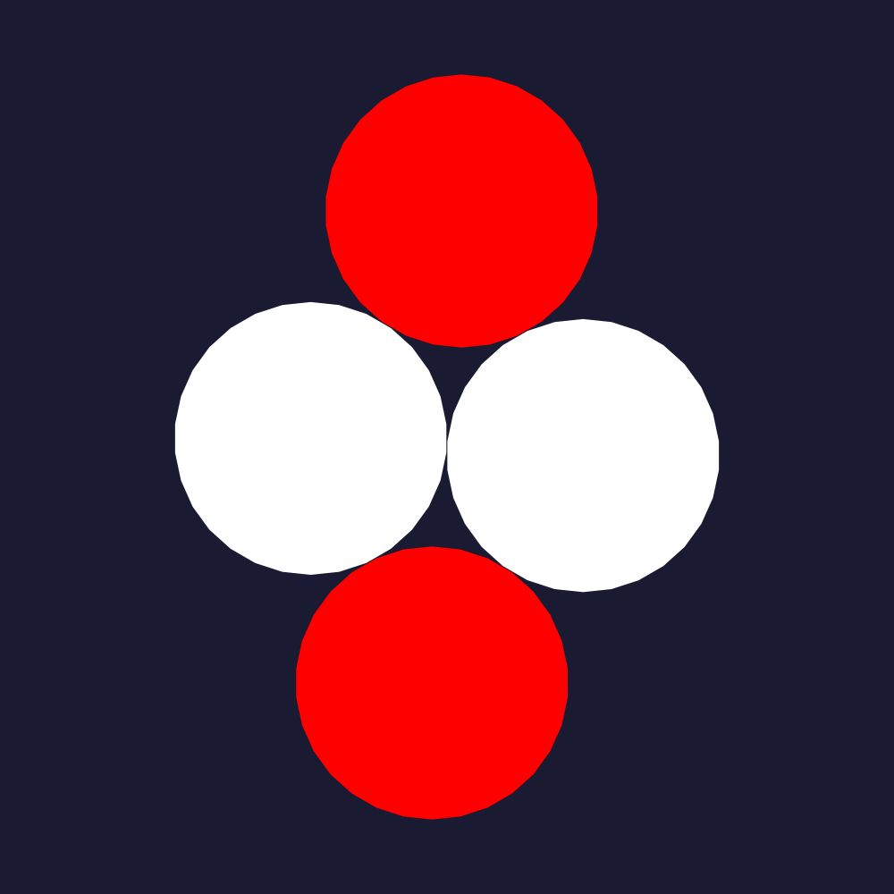
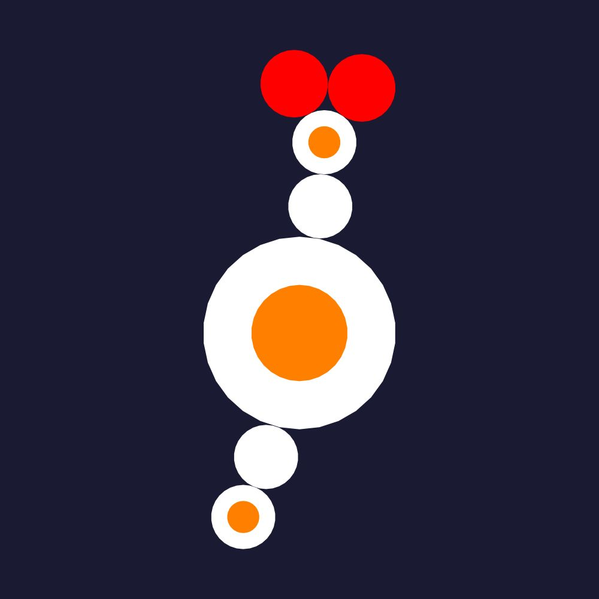
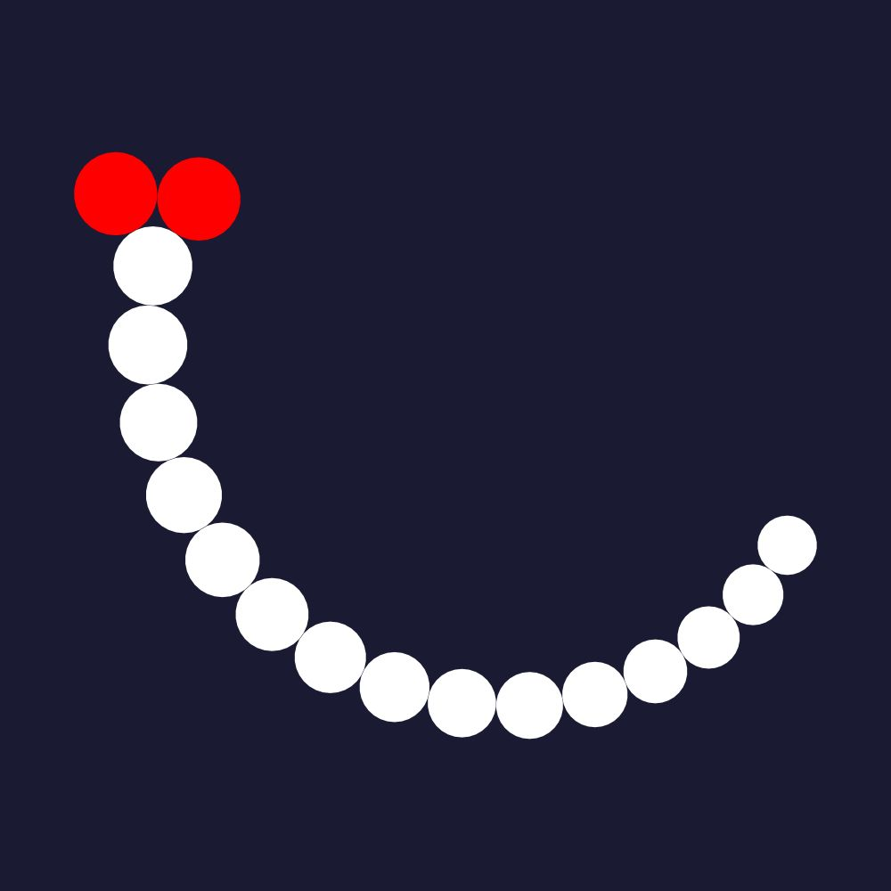
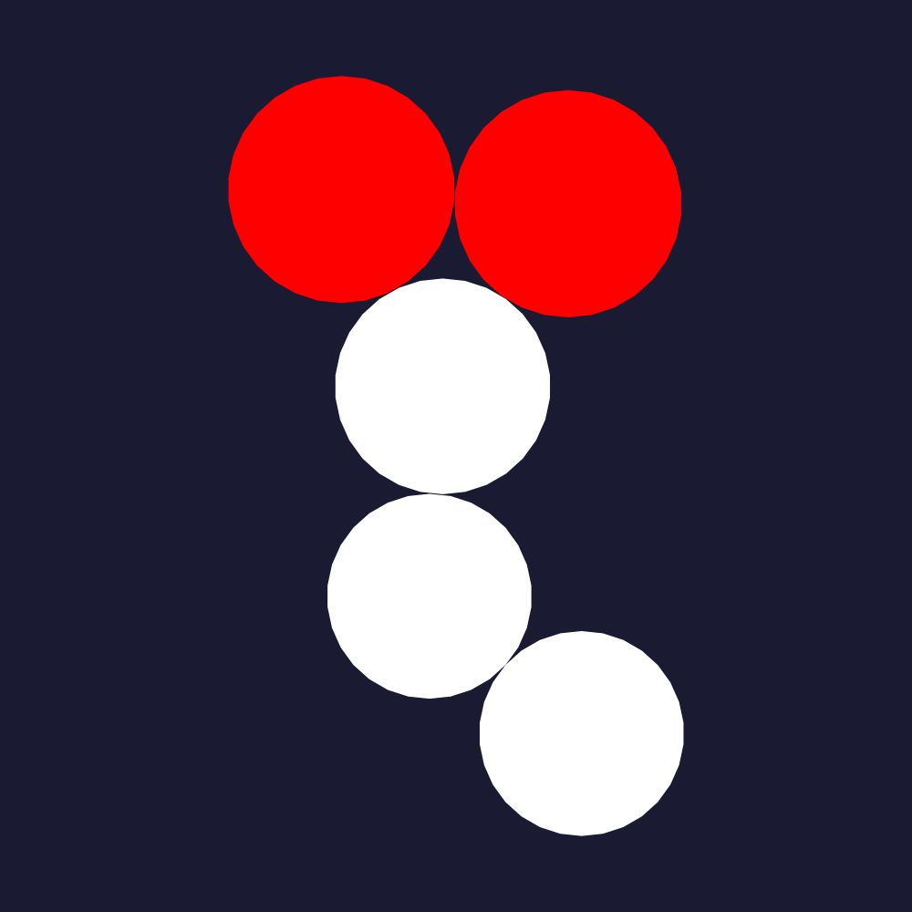

Making of Coral Nest
In this post, I am going to describe how the work below, Coral Nest]], has been created.

Coral Net is made of 30000+ circles, computed by a generative program. This computer program uses pre-defined patterns of adjacent circles, and tries to combine them without collision.
Let check first what are adjacent circles, and how we can define patterns and combinations with them.
Circles adjacency
Two circles are adjacent if their intersection only consists of one point. It simply means that the two circles touch each other.
Iterating adjacent circles
One interesting way to consider two adjacent circles is to imagine that a first circle gives berth to a second one, according to some parameters, a bit like cell division.
Thus:
- a first circle is created, called the seed. On the picture above, let say the seed is the right circle.
- from this seed, a new circle is created, by choosing an angle and a radius. On the picture above, the left circle is obtained by creating an adjacent circle from the left right, with a slight angle and an identical radius.
- this process can be iterated again, to obtain a pattern of adjacent circles, in that case what I called a circle string
Of course, by varying the angles and the radiuses used at each step for the new circles, we can get some interesting designs. In particular, we can define several new circles with different angles from a same circle, to create bifurcations and trees of circles.
Meanwhile, another way to create bifurcations is to use the 2-circle adjaceny, as explained in the next section.
2-circle adjacency
If we consider again the first two adjacent circles, we can use another way to define the next circle to generate. Instead of using only the left-most circle and a new angle and radius, we can impose the new circle to be adjacent to the 2 previous circles.
In that case, the new circle is defined by two new parameters, a radius, and the side of the first 2 circles to be used. So for 2 adjacent circles, with this process, we can obtain 2 new circles, as follows

From those 2 red circles, we can:
- create a new circle string
- or iterate the same 2-circle process with the 4 new circle pairs obtained
Bubble pattern
Based on the mechanism of adjacent circles described in the previous sections, we can define a pattern by the set of parameters used to compute the new circles from a root or seed. This pattern also describes how to render the circles
For example, the following pictures represent one of the 3 patterns used to compute Coral Net

This pattern is made of 5 circles, alternatively white and whote/orange, and whose third circle is 3 times the size of the other circles.
Iteration of bubble patterns
What is now really interesting is that a bubble pattern can also be used to define seeds for some new patterns, and so to define a way to combine and iterate bubble patterns.
Coral Net anatomy
Coral Net makes use of three elementary bubble patterns:
 
Those three patterns are combined in the following recipe:
- 4 seeds are first computed and regularly spaced on a circular contour
- those seeds are first used by the first pattern, to create new seeds for the second pattern
- those new seeds are then grown with the second pattern, and if succeed, are used to create new seeds for the third one.